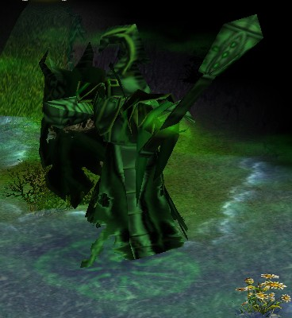

Save your W to defend against Pudge's Corruption Wave.
If you plan on killing Stalkers, use your F just before they spawn to silence and slow them right away. This way you wont miss.
If any of enemy takes agro on you, run around the map while using your skills.
Remember to use your W just after Stalker's death, his explosion slows you down and makes vulnerable to Avenger.
Better use your T on Avenger than on Stalkers. He is of bigger potential danger.